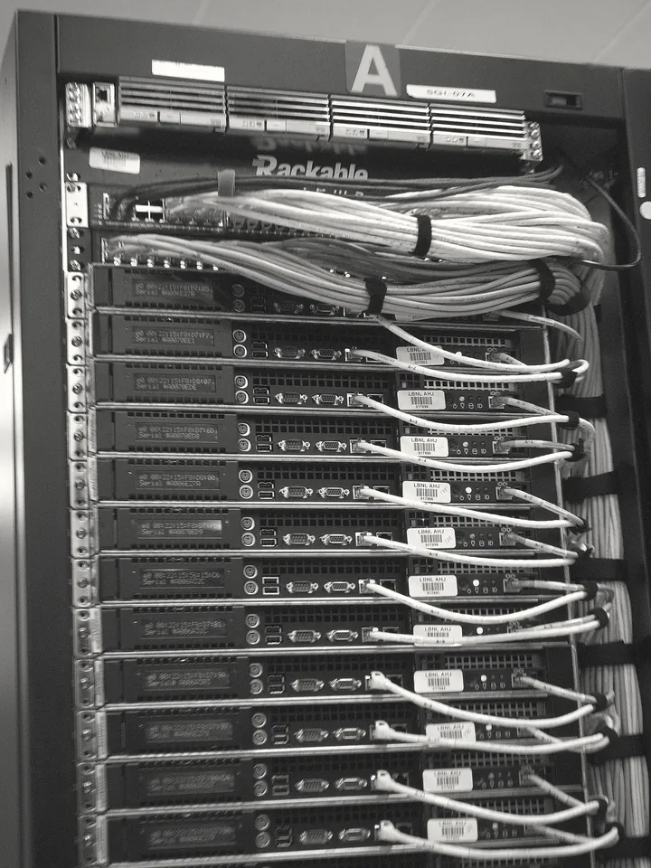
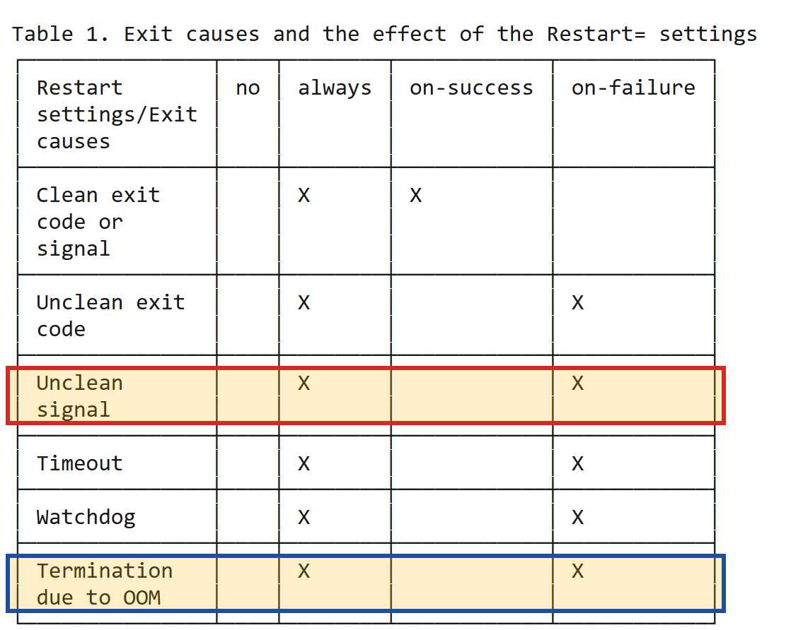

Bài 02 kết thúc ở một câu hỏi: 502 nghĩa là phía sau Nginx không còn ai trả lời. Nhưng "app" thật ra là gì trên một máy chủ, vì sao nó có thể chết, và vì sao nó chết thì website sập? Bài 02 đã cho biết ai viết ra mã lỗi; bài này đi xuống tầng bên dưới để tìm vì sao phía sau Nginx lại trống. Để có câu trả lời, ta bắt đầu từ một quyết định rất đời thường của người sắp đưa ứng dụng lên server.
Bạn sắp đưa ứng dụng Spring Boot + PostgreSQL của mình lên chạy trên một server thật, và người cấp máy hỏi bạn cần cấu hình thế nào. Có hai phương án, và các con số trong đó đo những thứ mà khi viết code backend ta ít khi phải nghĩ tới:
Phương án A 2 vCPU · 2 GB RAM · 40 GB SSD
Phương án B 4 vCPU · 8 GB RAM · 80 GB SSDCâu hỏi hiển nhiên là chọn phương án nào. Câu hỏi quan trọng hơn là: trong ba con số đó, con số nào sẽ cạn trước, và khi nó cạn thì hệ thống sẽ hỏng theo kiểu gì?
Không trả lời được câu đó thì chỉ còn cách chọn theo cảm tính: xin cấu hình lớn cho chắc, hoặc xin cấu hình nhỏ rồi gặp sự cố mà không biết nguyên nhân. Thứ còn thiếu là một mô hình về những gì có bên trong một máy chủ, và cách chúng tác động lên nhau khi một thứ cạn.
Câu hỏi của bài, tách thành ba câu
Tình huống trên và câu hỏi Bài 02 để lại thật ra là một: muốn biết con số nào cạn trước và cạn thì hỏng ra sao, phải biết "app" trên máy chủ là gì, nó sống nhờ cái gì và chết theo cách nào. Câu hỏi của bài vì vậy được tách thành ba câu nhỏ, câu sau dựa trên câu trước:
- Chọn cấu hình server thì con số nào sẽ hết trước?
- Vì sao hết RAM thì app chết, còn hết CPU thì app chỉ chậm?
- Vì sao app chết thì website sập: chuỗi nhân quả đầy đủ, từ tầng phần cứng tới con số 502 mà người dùng nhìn thấy trên màn hình?
Trả lời xong câu cuối, một câu hỏi nữa nảy ra: app đã chết rồi thì ai dựng nó dậy? Các tab tiếp theo đi đúng theo thứ tự đó: bốn tài nguyên của máy, process, kernel, cách một process chết, rồi service.
Cần đã học trước
Bài này dùng lại những khái niệm dưới đây mà không giảng lại. Dòng nào còn mơ hồ, hãy mở lại đúng chỗ đã học trước khi đọc tiếp.
- Bản đồ chín chặng, và đoạn Nginx chuyển request vào ứng dụng: trên server, Nginx đứng trước ứng dụng (Bài 00).
- Port và listen: một port chỉ nhận kết nối khi có một chương trình đang listen ở đó (Bài 01).
- Refused và timeout: refused là máy đích trả lời ngay rằng không có chương trình nào listen; timeout là không có ai trả lời cả (Bài 01).
- 502 và 504 do Nginx viết: 502 khi phía sau không trả lời, 504 khi phía sau trả lời quá chậm (Bài 02).
- Hệ thống hỏng mà không ai đụng vào, và đã chạy chưa phải đã sẵn sàng (Bài 02).
"Server" thật ra là gì
Cả ba câu hỏi đều xảy ra trên một máy chủ, nên trước hết cần thống nhất máy chủ là gì.

Từ "server" có hai nghĩa: theo nghĩa phần mềm, server là một chương trình chờ nhận yêu cầu và trả lời (Nginx là một HTTP server, PostgreSQL là một database server); theo nghĩa phần cứng, server là cái máy mà những chương trình đó chạy trên. Ở đây ta nói về nghĩa thứ hai, và kết luận rất đơn giản: một server là một máy tính bình thường, có CPU, RAM, ổ đĩa, card mạng, y hệt chiếc laptop bạn đang dùng, kể cả khi nó là một máy ảo cắt ra từ một máy lớn hơn, phần mềm bên trong vẫn thấy một máy tính đầy đủ. Khác biệt giữa server và laptop nằm ở hoàn cảnh sử dụng, và hoàn cảnh đó khác nhau đúng ba điểm.
| Laptop của bạn | Server | |
|---|---|---|
| Thời gian chạy | bật khi làm việc | 24/7, không bao giờ tắt |
| Màn hình, bàn phím | có | không có gì cả (headless) |
| Người ngồi trước nó | bạn | không ai |
Hai điểm đầu có hệ quả dễ thấy. Chạy 24/7 nghĩa là mọi thứ tích tụ theo thời gian (log, rò rỉ bộ nhớ, chứng chỉ sắp hết hạn) có đủ thời gian để gây sự cố, đúng nguyên lý "hệ thống hỏng mà không ai đụng vào" ở Bài 02. Không màn hình (headless) nghĩa là bạn điều khiển nó qua mạng bằng dòng lệnh, việc sẽ học ở Bài 16. Điểm thứ ba có hệ quả rộng hơn cả.
Không có ai ngồi trước server. Trên laptop, chính bạn làm việc giám sát: chương trình treo thì bạn tắt đi và khởi động lại; có thông báo lỗi thì bạn nhìn thấy ngay. Trên server không ai làm việc đó: một chương trình chết lúc hai giờ sáng sẽ nằm nguyên như thế cho tới khi có người phát hiện.
Vì vậy, nhiều thứ lộ trình này dạy là cách tự động hoá những việc một người ngồi trước máy sẽ làm: khởi động lại chương trình khi nó chết, kiểm tra xem nó còn trả lời không, báo động khi nó hỏng. Ý này quay lại ở tab Service, khi ta hỏi ai dựng app dậy.
Bốn tài nguyên của một máy tính
Hai phương án ở tình huống mở bài khác nhau ở ba con số, nên câu hỏi đầu tiên là: ba con số ấy đo cái gì, và cái nào cạn trước? Trả lời được câu đó thì cũng giải thích được vì sao hết CPU thì app chậm còn hết RAM thì app chết. Server là một máy tính bình thường, và một máy tính, dù là laptop hay server, cung cấp cho phần mềm đúng bốn loại tài nguyên. Mọi chương trình chạy bằng cách tiêu thụ bốn thứ này, và rất nhiều sự cố hiệu năng quy về việc một trong bốn thứ cạn. Đó chính là ba con số ở Hình 1, cộng thêm băng thông mạng. Chương trình không tự lấy tài nguyên cho mình: bên chia chúng là kernel, phần lõi của hệ điều hành, thứ duy nhất nắm quyền trên phần cứng; tab Kernel sẽ cho thấy vì sao phải có nó.
CPU RAM Disk Network
thực thi dữ liệu đang lưu trữ truyền dữ
lệnh dùng bền vững liệu ra/vào
đo bằng đo bằng GB đo bằng GB đo bằng
số core volatile persistent Mbps
(mất điện (mất điện
là mất) vẫn còn)

- CPU Central Processing Unit · bộ xử lý
- Đơn vị thực thi lệnh. Một CPU có nhiều core, mỗi core tại một thời điểm chỉ chạy được một luồng lệnh. Trên VPS, con số "vCPU" là số core ảo mà máy ảo được chia, không phải số chip vật lý.
- RAM Random Access Memory · bộ nhớ trong
- Nơi chứa dữ liệu và mã lệnh đang được dùng. Nhanh hơn ổ đĩa nhiều bậc độ lớn, nhưng nhỏ hơn, đắt hơn, và mất sạch nội dung khi mất điện; người ta gọi tính chất đó là volatile.
- Disk ổ lưu trữ · SSD/HDD
- Nơi lưu dữ liệu bền vững (persistent): file chương trình, database, log. Tắt máy vẫn còn, nhưng truy cập chậm hơn RAM rất nhiều.
- Network card mạng và băng thông
- Đường ống nối máy với thế giới bên ngoài. Dung lượng của nó đo bằng băng thông (bao nhiêu dữ liệu mỗi giây) và giới hạn bởi bộ đệm của card mạng lẫn của kernel.
Với câu hỏi của bài, điều quan trọng là quan hệ giữa bốn thứ. CPU chỉ xử lý dữ liệu đang nằm trong RAM, không làm việc trực tiếp với ổ đĩa; muốn dùng một file, chương trình phải đọc nó từ đĩa vào RAM trước. Đó là việc diễn ra trong khoảng 30 giây Spring Boot khởi động: JVM đọc hàng nghìn file class vào RAM, khởi tạo các bean, mở sẵn connection tới database. Hệ quả: khi RAM đã được cấp hết, chương trình không còn chỗ đặt dữ liệu mình cần, và công việc không thể tiếp tục bình thường.
Ẩn dụ hỗ trợ ghi nhớ: người, mặt bàn, cái tủ
Quan hệ vừa nêu dễ nhớ hơn qua một phép so sánh. Đây là ẩn dụ, không phải định nghĩa: hãy hình dung một văn phòng. Ổ đĩa là cái tủ hồ sơ đặt dưới kho: chứa được rất nhiều, rẻ, bền, nhưng mỗi lần muốn lấy một tập hồ sơ thì phải đi xuống kho tìm. RAM là mặt bàn làm việc: nhỏ hơn cái tủ rất nhiều, nhưng mọi thứ đặt trên bàn thì với tay là tới. CPU là chính người nhân viên: người này chỉ có thể làm việc với những gì đang nằm trên bàn, không bao giờ làm việc trực tiếp với hồ sơ còn trong tủ.
| Là gì | Tính chất | Tắt điện | |
|---|---|---|---|
| Disk | cái tủ hồ sơ trong kho | To, rẻ, chậm | còn nguyên |
| RAM | mặt bàn làm việc | Nhỏ, đắt, nhanh | sạch trơn |
| CPU | chính người làm việc | Chỉ làm được với thứ đang trên bàn | — |
Trong ẩn dụ này, quy luật "CPU chỉ làm việc với dữ liệu trong RAM" thành "muốn dùng hồ sơ nào, phải bê nó từ tủ lên bàn trước", và hết RAM thành "mặt bàn hết chỗ".
Hình ảnh "một người, một cái bàn" gợi ý rằng mỗi lúc chỉ có một việc đang chạy. Thực tế một CPU nhiều core chạy song song thật sự, và ngay trên một core, kernel còn luân phiên hàng trăm chương trình với nhau nhanh tới mức bạn tưởng chúng chạy cùng lúc; mục ngay dưới đây nói kỹ hơn về việc luân phiên này.
Ẩn dụ cũng bỏ qua cache, bộ nhớ nhỏ nằm ngay trong con chip CPU, nhanh hơn RAM nhiều bậc. Để hiểu vì sao hết RAM thì app chết thì chưa cần tới nó, nhưng đừng mang ẩn dụ này đi tối ưu hiệu năng cấp thấp.
Bốn tài nguyên cạn kiệt theo bốn kiểu rất khác nhau
Để biết con số nào cạn trước và cạn thì hỏng ra sao, cần thấy rằng bốn tài nguyên khác nhau cả về lượng lẫn cách hỏng: mỗi loại khi cạn sinh ra một kiểu triệu chứng riêng, nên nhận ra kiểu triệu chứng là đã khoanh vùng được nguyên nhân trước khi mở log.
| Tài nguyên | Hết thì chuyện gì xảy ra | Mức độ |
|---|---|---|
| CPU | Công việc xếp hàng chờ. Không ai chết, chỉ chậm dần. | Chậm |
| RAM | Kernel giết một process để lấy lại chỗ | Chết |
| Disk | Không ghi được gì nữa. Log tắt, DB không commit được. | Lỗi rất lạ |
| Network | Gói tin bị vứt bỏ | Timeout |
Vì sao hết CPU chỉ làm chậm? Bởi vì thời gian của CPU là một tài nguyên chia sẻ theo lượt: bộ lập lịch (scheduler) của kernel cho mỗi chương trình chạy một khoảng rất ngắn rồi chuyển sang chương trình khác, nhanh tới mức từ bên ngoài ta thấy chúng như chạy cùng lúc. Khi có quá nhiều việc, không có việc nào bị huỷ; hàng đợi chỉ dài ra, và mỗi việc phải chờ lâu hơn tới lượt mình.
Ngược lại, RAM là một tài nguyên chiếm giữ: một byte đã được cấp cho chương trình này thì
không thể đồng thời được dùng bởi chương trình khác. Khi RAM đã được cấp hết, chờ đợi không giải
phóng được gì, vì không chương trình nào tự trả lại phần bộ nhớ nó đang giữ. Kernel buộc phải chọn
một chương trình và giết nó để thu hồi vùng RAM nó đang chiếm. Ổ đĩa đầy thì chương
trình vẫn sống nhưng mọi thao tác ghi thất bại với lỗi No space left on device: log ngừng
ghi, database từ chối commit. Mạng quá tải thì gói tin bị vứt bỏ, và phía gửi chỉ thấy im lặng cho tới
khi hết thời gian chờ, tức timeout ở Bài 01.
Hết CPU thì app chậm. Hết RAM thì app chết.
Nối về bản đồ chín chặng: 504 và 502
Hãy đặt hai kiểu hỏng này vào bản đồ, ở đoạn Nginx chuyển request vào Spring Boot. Khi máy hết CPU, Spring Boot vẫn sống và vẫn nhận request, nhưng mỗi request phải xếp hàng chờ CPU nên câu trả lời tới quá chậm; Nginx đợi tới hết khoảng thời gian nó được cấu hình để đợi, rồi tự viết ra một trang lỗi 504 Gateway Timeout. Khi máy hết RAM, Spring Boot bị giết, không còn process nào listen port 8080; Nginx xin kết nối tới đó và bị từ chối ngay lập tức, rồi tự viết ra trang lỗi 502 Bad Gateway.
Hết CPU → app còn sống nhưng trả lời quá chậm
↓
Nginx đợi hết thời gian chờ đã cấu hình
↓
504 Gateway Timeout
Hết RAM → app bị giết, không còn ai listen 8080
↓
Nginx xin kết nối, bị từ chối
↓
502 Bad GatewayQuay lại tình huống mở bài: với stack Spring Boot + PostgreSQL, con số thường cạn trước là RAM, bởi vì cả JVM lẫn PostgreSQL đều là những chương trình chủ động giữ nhiều bộ nhớ để chạy nhanh, trong khi phần lớn thời gian CPU của một ứng dụng web nhỏ ngồi chờ database và mạng. Đây là một nhận định "thường thì", không phải "luôn luôn": một ứng dụng xử lý ảnh hay mã hoá nặng có thể cạn CPU trước, và cách duy nhất để biết chắc là đo, việc ta sẽ học ở Bài 37.
Với Spring Boot và PostgreSQL, con số thường cạn trước là RAM. CPU được chia theo lượt, nên hết CPU chỉ sinh ra chờ đợi: app chậm, Nginx viết 504. RAM bị chiếm giữ, nên hết RAM thì kernel phải giết một chương trình: app chết, Nginx viết 502.
Nhưng "chương trình" bị kernel giết thật ra là gì, và vì sao nó chết thì port 8080 trống ngay?
Chương trình và process
Muốn biết vì sao app chết thì website sập, phải bắt đầu từ một chữ đã dùng hai lần mà chưa định
nghĩa. Ở tab trước, kernel "giết một chương trình" khi hết RAM; ở Bài 01, Nginx gọi tới "chương trình
đang listen port 8080". Cả hai chỗ cần biết chính xác thứ đó là gì, và câu trả lời nằm ở sự khác nhau
giữa một chương trình và một process. File app.jar mà Maven build ra là
một chương trình, tức một file nén chứa bytecode nằm yên trên ổ đĩa: không chiếm port nào, không trả lời
ai, không tiêu tốn CPU. Tình trạng đó thay đổi khi bạn gõ:
java -jar app.jarLúc đó, chương trình đang nhận lệnh bạn gõ trong cửa sổ dòng lệnh (thường là bash,
học kỹ ở Bài 04) yêu cầu kernel tạo ra một thực thể mới: kernel cấp cho nó một vùng RAM riêng, một
con số định danh, một danh sách riêng ghi lại những file và kết nối nó đang mở, rồi nạp mã của JVM vào
và cho nó chạy. Thực thể đang sống đó mới là thứ listen port 8080, mới là thứ trả lời request, và mới
là thứ có thể chết.
Một process (tiến trình) là một chương trình đang được thực thi. Chuẩn
POSIX (bộ chuẩn chung mà các hệ điều hành họ Unix, trong đó có Linux, cùng tuân theo) định
nghĩa chặt hơn: process là một không gian địa chỉ (address space) cùng với một
hoặc nhiều thread đang chạy bên trong không gian đó, và các tài nguyên hệ thống mà những thread ấy
cần. Hệ quả trực tiếp: cùng một chương trình có thể chạy thành nhiều process độc lập cùng lúc:
gõ java -jar app.jar hai lần là có hai process, mỗi process một PID, một vùng RAM riêng.
app.jar trên đĩa → process đang chạy
──────────────── ─────────────────
một file, nằm im PID 4123
không chiếm gì chiếm 800 MB RAM
không ai gọi được đang listen port 8080
copy được, xóa được kill được — và chết là hếtỞ Bài 01, một port chỉ nhận kết nối khi có một chương trình đang listen ở đó. Giờ ta gọi được đúng tên thứ đó: chương trình đang listen port 8080 chính là process này. Và nó có một định danh: một con số gọi là PID, do kernel cấp.
PID và cây process
Kernel cần một cách để gọi tên từng process, và cách nó dùng là một con số nguyên gọi là PID
(process identifier). PID được cấp khi process sinh ra và thu hồi khi process chết, nên nó
không phải một định danh cố định của ứng dụng: khởi động lại Spring Boot là có một
PID mới. Trên Unix và Linux, một process mới luôn được tạo ra bởi một process đang tồn tại, qua hai
bước: lời gọi fork() nhân bản process hiện tại thành một bản sao (process con), rồi
process con gọi execve() để thay chương trình của mình bằng một chương trình khác. Khi bạn gõ java -jar app.jar trong bash, chính bash đã fork ra một bản sao
của nó, và bản sao đó exec thành java. Vì mọi process đều có cha, tập hợp mọi process
trên máy tạo thành một cây.
| Khái niệm | Là gì |
|---|---|
| PID | Số định danh của process. Kernel cấp khi sinh, thu lại khi chết. Không cố định: restart app là có PID mới. |
| PPID | PID của process cha. Mọi process đều được sinh ra bởi một process khác. |
| PID 1 | Gốc của cây. Process đầu tiên kernel tạo khi máy khởi động. Trên Linux thường là systemd. |
PID 1 systemd
├── PID 892 sshd
│ └── PID 3301 bash ← terminal bạn đang gõ
│ └── PID 4123 java -jar app.jar
├── PID 901 nginx (master)
│ ├── PID 902 nginx (worker) ← chạy bằng user thường
│ └── PID 903 nginx (worker)
└── PID 1024 postgresNhánh thứ nhất có một cái tên chưa gặp. Vì server không có màn hình, người ta điều khiển nó từ xa
bằng SSH (Secure Shell): lệnh gõ trên máy bạn được mã hoá, gửi qua mạng và
chạy trên server. Phía server có process sshd listen port 22; mỗi lần bạn đăng nhập, nó
sinh ra một bash riêng cho bạn, và quãng từ lúc đăng nhập tới lúc ngắt kết nối gọi là một
phiên SSH. Cách dùng SSH học kỹ ở Bài 16.
Nhánh sshd bash java cho thấy ứng dụng là con cháu của phiên
SSH bạn đăng nhập: phiên đó đóng không khéo thì ứng dụng có thể bị kéo chết theo, và đó là một lý do để không
chạy ứng dụng production bằng cách gõ tay (tab Service nói cách chạy đúng). Nhánh nginx
cho thấy một master và nhiều worker. Trên Linux, chỉ process chạy bằng
root (tài khoản có toàn quyền trên máy) mới được listen các port dưới 1024, trong đó có
port 443 của HTTPS. Vì vậy master chạy bằng root để mở port 443, còn các worker xử lý request chạy bằng
một user thường, để nếu worker bị khai thác thì kẻ tấn công chỉ có quyền của user đó. Bên kiểm tra
quyền ấy là kernel, chủ đề của tab sau.
Mỗi process sở hữu những gì
Ngoài PID, kernel còn gắn cho mỗi process một bộ thuộc tính riêng (Hình 6), và bài cần cả năm:
vùng RAM riêng là thứ kernel thu hồi khi giết process vì hết RAM; danh sách file và kết nối đang mở là
nơi ghi port 8080 thuộc về process, nên process chết thì port trống; thư mục làm việc giải thích một
lỗi ở Lab 1; user quyết định kernel cho process làm gì; biến môi trường là cách cấu hình được đưa vào
ứng dụng (Lab 6). Trên Linux, bạn
có thể nhìn thấy từng thuộc tính qua thư mục ảo /proc/<PID>/
mà kernel dựng ra cho mỗi process: environ chứa biến môi trường, cwd trỏ
tới thư mục làm việc.
PID 4123 java -jar app.jar
│
├── vùng RAM riêng ← không đọc được RAM của process khác
├── file đang mở ← gồm cả các kết nối mạng
├── thư mục làm việc (cwd) ← đường dẫn tương đối tính từ đây
├── biến môi trường riêng ← SPRING_DATASOURCE_PASSWORD sống ở đây
└── user chạy nó ← quyết định nó được đọc/ghi file nàoDòng đầu tiên là cơ sở của sự cô lập giữa các process: mỗi process thấy một không gian địa chỉ ảo của riêng nó (virtual memory), nên cùng một địa chỉ trong hai process trỏ tới hai vị trí vật lý khác nhau, và process A không đọc được mật khẩu nằm trong RAM của process B. Hai dòng cuối đem tới hai hệ quả dùng được ngay.
Biến môi trường là thuộc tính của process, không phải của máy. Process
con nhận một bản sao biến môi trường của cha lúc được sinh ra; từ đó hai bản sống độc lập.
Vì vậy export trong một terminal không ảnh hưởng terminal khác (Lab 6), và đây là cách
mật khẩu hay địa chỉ database được đưa vào ứng dụng mà không ghi cứng trong code.
Bài 10.
User chạy process quyết định nó phá được gì. Mọi quyết định cho phép hay từ
chối truy cập file đều được kernel đưa ra dựa trên user của process. App chạy bằng
root mà có lỗ hổng thì kẻ tấn công có cả máy; app chạy bằng một user riêng thì kẻ tấn
công chỉ có đúng phần của user đó. Bài 09.
Process và thread
Một câu hỏi tự nhiên nảy sinh, và câu trả lời của nó giải thích vì sao một lỗi bộ nhớ ở một chỗ nhỏ có thể kéo chết cả ứng dụng: nếu mỗi process có vùng nhớ riêng, thì làm sao Spring Boot phục vụ hàng trăm request cùng lúc? Câu trả lời là thread (luồng): một dòng thực thi độc lập bên trong một process, có con trỏ lệnh và ngăn xếp (stack) riêng, nhưng dùng chung vùng nhớ và danh sách file đang mở với mọi thread khác của process đó.
Process = một vùng nhớ riêng + các thuộc tính riêng.
Không đọc được vùng nhớ của process khác.
Thread = một dòng thực thi bên trong process,
dùng chung vùng nhớ với các thread khác.Spring Boot của bạn là một process với hàng trăm thread: theo mô hình truyền thống, Tomcat nhúng bên trong giữ một pool thread và giao mỗi HTTP request cho một thread trong pool. (Virtual thread của Java 21 không thay đổi điều này: chúng vẫn nằm trong cùng một process.) Chính việc dùng chung vùng nhớ là nguồn gốc của cả ưu điểm lẫn rủi ro.
| Hệ quả | Vì sao |
|---|---|
| Giết process là giết tất cả thread | Không có chuyện "giết một request": kernel dừng mọi thread và thu hồi vùng nhớ chung của process. |
| Một thread làm tràn RAM thì cả process chết | Các thread dùng chung vùng nhớ, nên OOM killer giết cả process, không giết riêng thread gây ra. |
| Thread rẻ hơn process rất nhiều | Tạo thread không phải dựng một vùng nhớ mới như tạo process |
Hệ quả thứ hai giải thích một hiện tượng khó hiểu nếu chỉ nhìn từ code: chỉ một endpoint có lỗi (chẳng hạn một API xuất báo cáo nạp cả bảng dữ liệu vào bộ nhớ) cũng đủ làm sập toàn bộ ứng dụng, kéo theo mọi endpoint khác vốn hoàn toàn khoẻ mạnh. Không có vách ngăn nào giữa các thread về mặt bộ nhớ; đó là cái giá của việc chúng chia sẻ bộ nhớ để trao đổi dữ liệu nhanh.
"App" là một process: chương trình app.jar khi đang chạy, được kernel
cấp một PID, một vùng RAM riêng, một danh sách file và kết nối đang mở, trong đó có port 8080 mà
Nginx gọi tới. Spring Boot là một process chứa nhiều thread dùng chung vùng nhớ, nên giết process là
giết mọi request đang xử lý dở.
Vậy ai là bên cấp PID, cấp RAM, ghi nhận port 8080 thuộc về process nào, và có quyền giết process?
Vì sao Spring Boot không tự ghi thẳng vào ổ cứng?
Giữa cái chết của một process và con số 502 còn một mắt xích: ai giữ quan hệ giữa port 8080 và process đang listen nó, và vì sao process chết thì quan hệ đó biến mất ngay? Câu trả lời là một thành phần đã được nhắc tên từ Bài 01 mà chưa được giải thích. Muốn thấy vì sao phải có thành phần ấy, hãy hình dung mọi chương trình đều được chạm thẳng vào phần cứng. Một app lỗi có thể ghi đè vùng RAM của app khác; hai app cùng ghi một vị trí trên đĩa làm hỏng dữ liệu của nhau; một app độc hại đọc được mật khẩu trong bộ nhớ của app khác. Vì vậy phải có một lớp trung gian nắm độc quyền phần cứng, đứng giữa mọi chương trình và máy, quyết định ai được làm gì. Lớp đó là kernel.
Kernel (nhân hệ điều hành) là phần lõi của hệ điều hành, chạy ở chế độ đặc quyền của CPU (kernel mode) và là thành phần duy nhất được phép thao tác trực tiếp với phần cứng. Mọi chương trình còn lại, kể cả những thứ trông rất "hệ thống" như bash hay Nginx, chạy ở chế độ hạn chế (user mode), trong một vùng gọi chung là user space. Sự phân tách này do chính CPU cưỡng chế bằng các mức đặc quyền phần cứng, nên một chương trình ở user mode không thể thực thi lệnh đặc quyền.
┌──────────────── user space ─────────────────┐
│ │
│ Spring Boot Nginx PostgreSQL bash │ ← không được
│ │ chạm phần cứng
└───────────────────────┬─────────────────────┘
│
syscall ← cách duy nhất để nhờ kernel làm hộ
│
┌───────────────────────▼─────────────────────┐
│ kernel │ ← độc quyền phần cứng
└───────────────────────┬─────────────────────┘
▼
CPU RAM Disk Networksyscall: app không tự làm, nó xin kernel làm hộ
Nếu chương trình không được chạm phần cứng, làm sao nó đọc được file hay mở được kết nối mạng? Nó phải xin. Cơ chế xin đó gọi là system call, thường viết tắt là syscall: chương trình ghi yêu cầu của mình vào một chỗ đã quy ước sẵn, rồi thực thi một lệnh CPU đặc biệt để chuyển quyền điều khiển sang kernel. Kernel kiểm tra yêu cầu có hợp lệ không, process có quyền không, thực hiện nó, rồi trả kết quả về và cho chương trình chạy tiếp ở user mode. Linux có vài trăm syscall khác nhau, nhưng những syscall quan trọng với người vận hành thì chỉ gói gọn trong vài nhóm.
| Nhóm | syscall | App đang xin gì |
|---|---|---|
| File | open read write close | "Mở hộ tôi file này" |
| Mạng | socket bind listen accept | "Ghi nhận port 8080 cho tôi" |
| Process | fork execve kill | "Tạo hộ tôi một process mới" |
| Bộ nhớ | mmap brk | "Cấp thêm bộ nhớ cho tôi" |
Điều đáng để ý là code Java của bạn không bao giờ gọi trực tiếp những syscall này. Khi bạn viết
new FileInputStream(f), lời gọi đi qua thư viện chuẩn của Java, xuống mã native của
JVM, xuống thư viện C của hệ điều hành, và cuối cùng mới tới syscall open. Nhưng dù đi
qua bao nhiêu lớp, đích đến cuối cùng luôn là một lời xin gửi tới kernel. Vì thế, khi kernel từ chối
một lời xin, lỗi của nó đi ngược qua chừng ấy lớp rồi hiện ra trong log của bạn, như mục dưới đây
sẽ cho thấy.
Kernel giữ bảng các port đang listen
Một trong những thứ kernel quản lý là quan hệ giữa port và process. Khi Spring Boot "listen ở port
8080", thực tế nó gọi bind() rồi listen() (hai syscall nhóm Mạng ở Bảng 6),
tức là xin kernel ghi nhận rằng port 8080 thuộc về process này. Kernel thêm vào bảng
các port đang listen một dòng: "8080 PID 4123". Từ lúc đó, mọi kết nối
gửi tới port 8080 đều được kernel chuyển cho đúng process ấy. Lệnh netstat ở Lab 2 in ra
chính bảng này. Ba hiện tượng bạn sẽ gặp đi gặp lại có chung một lời giải thích ở đây:
Address already in use → kernel tra bảng: 8080 đã thuộc process khác
kill process → refused → process chết, kernel xóa dòng 8080 ngay
port <1024 cần root → kernel kiểm tra quyền trước khi ghi vào bảngAddress already in use nhìn từ phía kernel
Khi bind() thất bại vì port đã có process khác listen, kernel không trả về một câu chữ mà trả về
một mã lỗi tên EADDRINUSE. Dòng Address already in use mà Spring Boot in ra
chỉ là mã đó được dịch sang chữ cho người đọc. Nói cách khác, dòng lỗi này là câu trả lời của
kernel sau khi tra bảng các port đang listen, đi qua nhiều lớp thư viện rồi mới tới log của bạn.
Kernel là phần lõi của hệ điều hành, thứ duy nhất được chạm vào phần cứng; mọi process, kể cả process chạy bằng root, chỉ có thể xin qua syscall. Kernel cấp PID và RAM, và giữ bảng các port đang listen: process chết thì dòng của nó bị xoá ngay, nên kết nối tới port đó bị từ chối.
Process có thể chết theo những cách nào, và khi hết RAM, kernel chọn process nào để giết?
Process chết: được báo trước, hay bị ép
Hai câu hỏi còn dở đều quy về lúc một process chết: khi hết RAM thì ai giết process và giết thế nào, và từ cái chết ấy tới con số 502 là chuỗi nào. Cách một process chết quyết định hệ thống còn lại trong trạng thái nào: Spring Boot đang giữ connection tới database, transaction đang dở, log còn trong bộ đệm chưa ghi xuống đĩa. Được báo trước thì nó dọn dẹp được; không thì những thứ đó bị bỏ lại giữa chừng. Process sống trong user space và không tự biết chuyện bên ngoài nó, nên lời báo phải đi qua kernel, và kênh kernel dùng để báo cho một process gọi là signal.
- Signal tín hiệu
- Một thông báo ngắn mà kernel gửi tới process vào bất kỳ lúc nào, không cần process hỏi; mỗi signal mang một con số và một ý nghĩa quy ước. Process có thể đăng ký hàm xử lý (handler) cho phần lớn signal; nếu không đăng ký, mỗi signal có một hành vi mặc định; với SIGTERM và SIGINT, mặc định là kết thúc process.
- SIGINT signal số 2
- "Ngắt": signal mà terminal gửi cho chương trình đang chạy khi bạn bấm Ctrl+C.
- SIGTERM signal số 15
- "Xin hãy kết thúc": signal mặc định của lệnh
kill. Process bắt được nó, nên có cơ hội dọn dẹp trước khi thoát. - SIGKILL signal số 9
- "Kết thúc ngay": signal không thể bị bắt, chặn hay bỏ qua. Process không bao giờ nhận được nó theo nghĩa thông thường: kernel trực tiếp xoá process.
SIGTERM và SIGKILL

signal(7) (man page là trang hướng dẫn chính thức đi kèm Linux, mỗi lệnh hay khái niệm một trang), với ba dòng khoanh: SIGINT, tín hiệu mà phím Ctrl+C gửi tới; SIGKILL, tín hiệu của kill -9; và SIGTERM, tín hiệu mặc định của lệnh kill. Cả ba có hành động mặc định Term, tức kết thúc process, nhưng chỉ SIGKILL là không bắt được, nên app không có cơ hội dọn dẹp.Cặp quan trọng nhất là SIGTERM và SIGKILL. Cả hai đều kết thúc process, nhưng SIGTERM là một lời đề nghị gửi tới process, còn SIGKILL là một mệnh lệnh kernel thực thi mà process không được hỏi. Với SIGTERM, nếu process đã đăng ký handler (Spring Boot có đăng ký) thì handler chạy, cho ứng dụng cơ hội thu xếp. Với SIGKILL, không handler nào được gọi: kernel dừng mọi thread của process và thu hồi toàn bộ tài nguyên của nó.
SIGTERM process được báo trước
→ Spring Boot chạy @PreDestroy
→ đóng connection pool, trả connection về DB
→ flush log ra đĩa
→ rồi mới thoát
SIGKILL process không được báo
→ không chạy một dòng nào
→ connection treo lại ở phía database
→ transaction dở dang
→ dòng log cuối cùng mấtOOM killer: kernel chọn process để giết khi hết RAM
Ở tab Bốn tài nguyên, khi RAM cạn thì kernel phải giết một process. Cơ chế làm việc đó tên là
OOM killer (Out-Of-Memory killer). Khi không còn cách nào tìm được bộ nhớ
trống, kernel chấm điểm từng process (điểm xem được trong
/proc/<PID>/oom_score) và giết process có điểm cao nhất bằng
SIGKILL. Điểm chủ yếu dựa trên process nào đang chiếm nhiều bộ nhớ nhất, vì giết nó
giải phóng được nhiều chỗ nhất chỉ bằng một lần giết.
Câu hỏi hợp lý: sao kernel không trả lời "hết chỗ rồi" ngay khi chương trình xin thêm bộ nhớ, như cách nó từ chối một file không có quyền? Lý do là mặc định Linux cho phép overcommit: khi chương trình xin một vùng nhớ, kernel thường đồng ý ngay nhưng chưa cấp RAM vật lý thật; RAM thật chỉ được cấp vào lúc chương trình chạm tới vùng nhớ đó lần đầu. Cách làm này tiết kiệm rất nhiều, vì chương trình hay xin nhiều hơn mức thật sự dùng. Cái giá là: khi chương trình chạm vào một vùng nhớ đã được đồng ý cấp mà RAM vật lý không còn, kernel không thể trả lỗi cho lời xin đó nữa, vì lời xin đã được chấp nhận từ trước; OOM killer là cách cuối cùng để lấy lại RAM.
Thường là JVM. JVM giữ một vùng heap lớn cho các object của ứng dụng, cộng thêm bộ nhớ cho metaspace, cho stack của hàng trăm thread, cho mã đã được biên dịch, nên trên một server chạy Spring Boot, nó thường là process lớn nhất máy.
Hệ quả là: khi server hết RAM, process bị giết gần như luôn luôn là chính app của bạn, kể cả khi process gây hết RAM là một process khác, chẳng hạn một script backup chạy lúc nửa đêm. Kernel không tìm process gây ra sự cố; nó tìm process mà giết đi thì được nhiều bộ nhớ nhất.
Gom lại: năm cách một process kết thúc
Tới đây đã đủ khái niệm để xếp mọi cách chết vào một bảng. Cột đáng nhìn nhất là cột cuối: chỉ những cách chết mà process được báo trước mới cho nó cơ hội dọn dẹp, và hai cách do kernel ép buộc thì không.
| Cách chết | Ai quyết định | Kịp dọn dẹp? |
|---|---|---|
| Tự kết thúc bình thường | chính app | |
| Exception không bắt được | chính app | các đoạn dọn dẹp đã đăng ký vẫn chạy |
SIGTERM — kill <pid> | người / hệ thống | app được báo trước |
SIGKILL — kill -9 | kernel, ép buộc | chết ngay lập tức |
| OOM killer | kernel | như SIGKILL |
Dấu hiệu nhận biết OOM, và vì sao nó khó tìm
Triệu chứng đặc trưng:
app biến mất đột ngột
log ứng dụng không có gì cả ← không một dòng lỗi, không stack trace
không ai deploy, không ai đụng vàoVì sao log ứng dụng trống trơn? Vì app bị SIGKILL: như Bảng 7 đã chỉ ra, SIGKILL không cho process chạy thêm một dòng nào, nên framework logging không có cơ hội ghi ra một câu "sắp dừng vì hết bộ nhớ". Vì thế, sau một vụ OOM, tìm stack trace trong log ứng dụng là tìm ở chỗ mà về nguyên tắc không thể có stack trace nào.
Log ứng dụng trống không có nghĩa là không có dấu vết; dấu vết nằm ở chỗ khác. Bên giết process là kernel, và kernel tự ghi lại việc nó đã giết process nào vào log của chính nó:
dmesg | grep -i "killed process"Đây là chỗ cần tìm khi app biến mất mà log ứng dụng không có gì.
Vì sao "app chết thì website sập": chuỗi đầy đủ
Giờ đã đủ khái niệm để trả lời trọn câu hỏi vì sao app chết thì website sập, đi một mạch từ lúc RAM cạn tới con số người dùng nhìn thấy. Trong chuỗi dưới đây, mỗi bước là hệ quả của bước trước, và mỗi bước dựa trên một khái niệm đã gặp trong bài này hoặc ở các bài trước.
1 RAM cạn
↓
2 Kernel chấm điểm, chọn JVM (ăn RAM nhiều nhất)
↓
3 SIGKILL — process 4123 biến mất tức thì, không kịp log
↓
4 Kernel xóa dòng "8080 → PID 4123" khỏi bảng port
↓
5 Nginx nhận request, xin kết nối tới 127.0.0.1:8080
↓
6 Kernel tra bảng: không ai listen 8080, từ chối ← Connection refused
↓
7 Nginx dịch sang ngôn ngữ HTTP cho người dùng:
502 Bad GatewayBước 6 chính là Connection refused mà bạn đã tự tay đo được ở Bài 01, chỉ
khác là lần này nó xảy ra bên trong server, và bên nhận nó là Nginx thay cho curl.
Chuỗi này cũng cho thấy nguyên tắc "triệu chứng chứng minh các bước trước" ở Bài 02 áp dụng thế nào: 502 chứng minh Nginx vẫn chạy tốt, nhưng nguyên nhân thật là RAM cạn, sáu bước phía trước, ở một tầng mà trang lỗi không nhắc tới. Restart app thì 502 biến mất, nhưng thứ làm RAM cạn vẫn còn, và chuỗi sẽ lặp lại.
Khi hết RAM, OOM killer của kernel chấm điểm process chủ yếu theo lượng RAM đang giữ, chọn process lớn nhất (trên server Spring Boot thường là JVM) và giết bằng SIGKILL, nên app không kịp dọn dẹp và log ứng dụng trống trơn. Process chết thì kernel xoá dòng của port 8080, Nginx xin kết nối bị từ chối và viết 502.
Chuỗi bảy bước để lại một câu hỏi: app đã chết rồi thì ai dựng nó dậy?
Process và service: khác nhau ở bên trông coi
Chuỗi bảy bước ở tab trước kết thúc với một ứng dụng đã chết và một website trả 502. Câu hỏi tiếp theo là: ai sẽ dựng nó dậy? Với một process bình thường, câu trả lời là không ai cả. Một process sau khi chết là hết; không có cơ chế nào trong bản thân process khiến nó tự sống lại, cũng như không có cơ chế nào khiến nó tự khởi động khi máy bật lên. Đây là chỗ khái niệm service xuất hiện.

systemd.service(5): với từng kiểu chết (hàng) và từng giá trị Restart= (cột), dấu X cho biết systemd có dựng process dậy lại hay không. Dòng khoanh đỏ là trường hợp của kill -9, một tín hiệu "không sạch"; dòng khoanh lam là OOM killer. Cả hai đều được Restart=on-failure khởi động lại; đó chính là chính sách trông coi biến một process thành một service.Một service (trong truyền thống Unix còn gọi là daemon) là
một process chạy nền, không gắn với terminal nào, được một process khác trông coi. Người
trông coi đó (supervisor) chịu trách nhiệm khởi động service khi máy bật, theo dõi nó trong
lúc chạy, và dựng nó dậy khi nó chết theo một chính sách định trước. Trên các bản phân phối Linux
hiện đại, người trông coi mặc định là systemd, chính là PID 1 ở gốc cây process trong
Hình 5.
| Process | Service | |
|---|---|---|
| Là gì | một chương trình đang chạy | một process + một người trông coi |
| Chết thì sao | hết. Không ai dựng dậy. | tự được khởi động lại |
| Máy khởi động lại | không tự chạy | tự chạy |
| Ai trông | — | systemd (và về sau những công cụ ở Hình 13) |
Bảng 8 cho thấy service vẫn là chương trình cũ. File app.jar
chạy thành process hay chạy thành service là cùng một file, cùng một đoạn code; khác biệt
duy nhất nằm ở chỗ có một process khác đứng ngoài, cầm trong tay mô tả "chương trình này cần chạy,
chạy bằng user nào, chết thì làm gì". Đó là lý do việc biến một ứng dụng thành service không đòi hỏi
sửa một dòng code nào; chỉ cần viết một file cấu hình cho người trông coi.
Không có ai ngồi trước server. Nên phải có một process khác làm thay việc của người đó: thấy app chết và dựng nó dậy, kể cả lúc hai giờ sáng, kể cả khi chính OOM killer đã giết nó.
Docker trông coi ứng dụng đóng gói trên một máy → Bài 14
Kubernetes trông coi ứng dụng trên cả một cụm máy → Bài 27Một service tự khởi động lại là cần thiết, nhưng nó không sửa nguyên nhân. Quay lại chuỗi bảy bước: người trông coi can thiệp sau khi process bị giết, dựng app dậy, và 502 biến mất, nhưng thứ làm RAM cạn vẫn còn đó. Nếu RAM cạn vì một nguyên nhân kéo dài, app sẽ bị giết, được dựng dậy, rồi lại bị giết, thành một vòng lặp mà nhìn từ ngoài giống như website "chập chờn". Tự động dựng dậy giải quyết triệu chứng để người dùng ít bị ảnh hưởng; tìm ra vì sao RAM cạn vẫn là việc của bạn, và đó là lý do ở Bài 37 và 38 ta sẽ học cách đo và cách tự báo động, để biết app đã phải dựng dậy bao nhiêu lần và vì sao.
Vòng lặp đó còn một hệ quả khó thấy hơn, và đây là chỗ tôi tự nhận ra trong lúc học bài này. Ngay sau khi được dựng lại, JVM thường còn nhỏ vì chưa nạp hết mọi thứ. Nếu thứ làm cạn RAM là một script sao lưu chạy ban đêm, lúc này chính script mới là process lớn nhất, và OOM killer giết nó. App sống lại, nhưng bản sao lưu đêm đó thất bại mà không ai hay, cho tới ngày cần khôi phục dữ liệu mới phát hiện ra.
Service là một process cộng với một process khác trông coi nó, trong tay có bản mô tả "chạy chương trình nào, bằng user nào, chết thì làm gì". Trên Linux, bên trông coi mặc định là systemd (PID 1): nó chạy app khi máy bật và dựng app dậy khi app chết. Tự dựng dậy chữa triệu chứng chứ không chữa nguyên nhân.
Phần lớn những điều trên có thể thấy tận mắt ngay trên máy bạn: tab Lab cho bạn tự sinh ra, tìm và giết một process.
Chuẩn bị
Toàn bộ lab chạy ngay trên Windows, trong Git Bash, chưa cần cài thêm gì. Lab biến từng khái niệm của bài thành thứ bạn tận mắt thấy: một process sinh ra, listen một port, chiếm RAM, và chết theo hai cách khác nhau. Bạn cần hai cửa sổ terminal mở song song: một để chạy process, một để quan sát nó từ bên ngoài.
Windows không dùng signal như Linux. Bấm Ctrl+C thì Windows gửi một
console control event, và Node.js dịch nó thành SIGINT; còn taskkill /F
kết thúc process cưỡng bức, tương đương SIGKILL. Lab 4 và Lab 5 vì thế vẫn cho thấy đúng khác biệt
giữa "được báo trước" và "bị ép". Ở Bài 04, khi đã có một máy Linux thật ngay trên Windows, bạn sẽ dùng kill và
kill -9 thật.
Lab 1 — Sinh ra một process và nhìn nó tồn tại
Dùng Node làm một web server nhỏ nhất có thể. File đã có sẵn ở lab/server.js; phần
cốt lõi của nó như sau:
const http = require('http');
const server = http.createServer((req, res) => res.end('con song\n'));
server.listen(8080, () => {
console.log('PID = ' + process.pid + ' | dang listen port 8080');
});
// Đăng ký hàm xử lý SIGINT — chỉ chạy khi được báo trước (Ctrl+C)
process.on('SIGINT', () => {
console.log('\n[SIGINT] duoc bao truoc, dang don dep...');
setTimeout(() => {
console.log('[SIGINT] da dong xong, thoat tu te.');
process.exit(0);
}, 1500);
});Để ý hai điểm trong đoạn code. Lời gọi server.listen(8080) chính là lúc Node xin
kernel ghi nhận port 8080 qua bind() và listen(). Còn khối
process.on('SIGINT', …) là một signal handler: nó chỉ có cơ hội chạy nếu process được
báo trước. Chạy server từ thư mục của bài (lessons/03-may-tinh-va-he-dieu-hanh):
node lab/server.jsNó in ra PID của chính nó. Ghi lại con số đó vào notes.md; các lab
sau đều cần nó.
Cannot find module
Gõ cùng lệnh đó khi đang đứng ở thư mục gốc của repo, Node báo:
Error: Cannot find module '…\devops_selfLearning\lab\server.js'
code: 'MODULE_NOT_FOUND'File không hề mất. Node tính đường dẫn tương đối lab/server.js từ thư mục
làm việc của process (dòng cwd trong Hình 6), chứ không tính từ chỗ file nằm,
nên nó đi tìm một thư mục lab không có ở gốc repo. Ứng dụng Spring Boot cũng vậy:
new File("config/app.yml") tìm thấy hay không là tuỳ bạn gõ java -jar từ
thư mục nào. Sửa: cd vào thư mục của bài rồi chạy lại.
Lab 2 — Xác nhận process đang listen port 8080 chính là process này
Mở cửa sổ thứ hai. Ba lệnh dưới đây đi theo đúng chiều của một cuộc điều tra thật: trước hết xác nhận port 8080 có process trả lời, rồi đọc bảng port xem PID nào đang listen nó, rồi tra xem PID đó là chương trình nào.
# 1. Port 8080 có ai trả lời không?
curl http://localhost:8080
# 2. PID nào đang listen port 8080? (Git Bash hoặc PowerShell)
netstat -ano | grep 8080
# 3. Con số cuối mỗi dòng là PID. Nó là ai?
tasklist //FI "PID eq <PID_ban_vua_thay>"Bạn vừa đi ngược từ port PID tên chương trình. Đây chính là bước đầu tiên
khi debug Address already in use ngoài đời thật: thay vì đoán "chắc có cái gì đang chạy",
bạn đọc thẳng bảng các port đang listen của kernel. (Dấu // trước FI là vì Git Bash hiểu
một dấu / là đường dẫn; nhân đôi nó để truyền nguyên văn cho lệnh Windows.)
Trên máy tôi, lần chạy thật cho ra:
$ curl http://localhost:8080
con song
$ netstat -ano | grep 8080
TCP 0.0.0.0:8080 0.0.0.0:0 LISTENING 29140
TCP [::]:8080 [::]:0 LISTENING 29140
TCP [::1]:52835 [::1]:8080 TIME_WAIT 0
$ tasklist //FI "PID eq 29140"
Image Name PID Session Name Session# Mem Usage
========================= ======== ================ =========== ============
node.exe 29140 Console 1 54,532 KHai dòng LISTENING mang cùng PID 29140, khớp với PID mà Node tự in ra: một process
listen port 8080 trên cả địa chỉ IPv4 0.0.0.0 lẫn địa chỉ IPv6 [::], đúng chuyện
listen address ở Bài 01. Dòng thứ ba, trạng thái
TIME_WAIT với PID 0, thì không phải một process đang listen: đó là dấu vết của chính kết nối mà curl vừa mở rồi đóng, đang chờ
kernel dọn hẳn.
Tự gây lỗi: hai process tranh một port
Lúc process ở trên vẫn đang chạy, mở thêm một cửa sổ và chạy lại node lab/server.js.
Trước khi chạy, hãy dự đoán bằng bảng các port đang listen ở tab Kernel: process mới sẽ ra sao, và process cũ có bị
ảnh hưởng gì không?
Error: listen EADDRINUSE: address already in use :::8080
code: 'EADDRINUSE',
syscall: 'listen',
address: '::',
port: 8080Mấy dòng cuối đọc được bằng chính kiến thức của bài. syscall: 'listen' là lời process
mới xin kernel ghi nhận port 8080 (nhóm Mạng trong Bảng 6). EADDRINUSE là câu trả lời của
kernel sau khi tra bảng và thấy port 8080 đã thuộc process khác; address already in use chỉ là
Node dịch mã đó sang chữ. Process mới không có code bắt lỗi này nên tự chết (cách chết "exception
không bắt được" trong Bảng 7), còn process cũ vẫn chạy như không có gì xảy ra.
Muốn process mới chạy được chỉ có hai đường: giải phóng port (tắt process cũ) hoặc
dùng port khác (với Spring Boot là server.port). Trước khi chọn đường
nào, hãy dùng ba lệnh ở trên để biết chắc process nào đang listen port đó: process đó có khi là một ứng
dụng bạn đã bật từ trước rồi quên mất.
Lab 3 — Chứng minh process ăn RAM, còn file .js thì không
# File trên đĩa: khoảng 1 KB
ls -l lab/server.js
# Process trong RAM: vài chục MB
tasklist //FI "PID eq <PID>" //FO LISTSo hai con số. Cùng một chương trình, nhưng chỉ process đang chạy mới chiếm RAM. Phần chênh lệch
không nằm trong file của bạn: nó là toàn bộ bộ máy JavaScript của Node được nạp vào RAM để chạy vài
dòng code đó, đúng như Hình 4 đã mô tả cho app.jar.
Trên máy tôi: server.js nặng 1.188 byte, còn process Node chạy nó chiếm 54.532 KB,
gấp khoảng 47.000 lần. Trên cùng máy lúc đó có một process java.exe chiếm
732.832 KB, hơn 13 lần Node, một minh chứng nhỏ cho điều đã nói ở tab Process chết: JVM thường là
process lớn nhất máy.
Lab 4 — Giết process, và xem port 8080 trống ngay lập tức
Ở cửa sổ đang chạy server, bấm Ctrl + C. Quan sát dòng
[SIGINT] duoc bao truoc, dang don dep...: app được báo trước và kịp
chạy phần dọn dẹp trước khi thoát. Rồi ở cửa sổ kia:
time curl -4 http://localhost:8080
netstat -ano | grep 8080Bạn sẽ thấy curl báo lỗi (7) (không kết nối được, tức là refused), và dòng
LISTENING của port 8080 biến mất. So con số của time với 2,155 giây ở Bài 01
và ghi vào notes.md. Trên máy tôi:
$ time curl -4 http://localhost:8080
curl: (7) Failed to connect to localhost port 8080 after 2030 ms: Could not connect to server
real 0m2.087s2,087 giây, sát với 2,155 giây ở Bài 01: cả hai đều đến từ cùng một hành vi thử lại của Windows khi bị từ chối kết nối, nên con số gần như không đổi giữa các lần đo.
Process chết kernel xoá dòng của port 8080 kết nối tới port đó bị từ chối. Trên production,
Nginx sẽ là bên nhận refused đó và viết thành 502.
Lab 5 — Tự gây lỗi: giết ép, và so sánh
Đây là bước cố tình gây lỗi của bài. Chạy lại node lab/server.js, ghi PID mới (để ý
nó đã khác PID ở Lab 1, vì PID không cố định). Lần này, ở cửa sổ khác, giết ép:
# PowerShell hoặc Git Bash — /F nghĩa là ép buộc
taskkill //F //PID <PID> Ctrl+C → "[SIGINT] duoc bao truoc, dang don dep..." ← có in dòng dọn dẹp
taskkill /F → cửa sổ tắt phụt, không in gì cả ← không kịp in gìĐây chính là khác biệt giữa SIGTERM và SIGKILL trên Linux, và là lý do OOM killer để lại log trống trơn. Bạn vừa tái hiện, trong môi trường an toàn, đúng hiện tượng sẽ gặp trên production: process biến mất mà không in ra dòng nào.
Để "sửa" lỗi vừa gây ra, chỉ cần chạy lại node lab/server.js và kiểm tra bằng
curl rằng port 8080 lại có process trả lời. Để ý rằng bạn vừa đóng vai người trông coi
ở tab Service: thấy process chết, và dựng nó dậy bằng tay.
Lab 6 — Chứng minh biến môi trường thuộc về process
# Cửa sổ 1
export BI_MAT="xin chao"
echo $BI_MAT # → xin chao
# Mở cửa sổ 2, gõ lại
echo $BI_MAT # → (trống)Cùng một máy, cùng một user, nhưng biến chỉ tồn tại trong process bash nơi bạn
đặt nó, và trong những process con mà bash đó sinh ra sau thời điểm export. Cửa sổ thứ
hai là một process bash khác, với bản sao biến môi trường riêng của nó. Đây là nền tảng của toàn bộ
cách quản lý cấu hình và secret sau này. Bài 10.
Câu "những process con mà bash đó sinh ra sau thời điểm export" kiểm chứng được ngay.
Mỗi lệnh gõ vào bash đều chạy thành một process con của nó, kể cả khi lệnh đó là chính
bash. Trong các lệnh dưới đây, $$ là PID của bash đang chạy, còn
$PPID là PID của cha nó:
# Cửa sổ 1, sau export
$ echo $$
1227
$ bash # sinh ra một bash con, vẫn trong cửa sổ này
$ echo $$
1493
$ echo $PPID
1227
$ exit # quay về bash cha
# Cùng một dòng, chạy ở hai cửa sổ
$ node -e "console.log(process.env.BI_MAT)" # cửa sổ 1
xin chao
$ node -e "console.log(process.env.BI_MAT)" # cửa sổ 2
undefinedBash con có PPID đúng bằng PID của bash cửa sổ 1: quan hệ cha–con nhìn thấy được bằng số. Hai
process Node ở hai cửa sổ thì đều là "một process khác", nhưng chỉ process sinh ra từ bash của cửa sổ 1
mới có BI_MAT. Điều quyết định không phải là khác process hay không, mà là cha của
nó là ai, và nó được sinh ra trước hay sau dòng export. (node -e "…"
chạy một dòng JavaScript viết ngay trên dòng lệnh; process.env tương đương
System.getenv() của Java.)
Những chỗ tôi từng hiểu sai
Trước khi đánh dấu danh sách tự kiểm tra, hãy đọc bảng dưới. Mỗi dòng là một chỗ chính tôi đã hiểu sai khi học bài này. Cách nghĩ nào cũng nghe rất hợp lý, nhưng sai ở một mắt xích cụ thể; nếu bạn cũng đang nghĩ như cột đầu, bấm "xem lại" để quay về đúng mục đã giảng.
| Tôi từng nghĩ | Thực tế | |
|---|---|---|
| Hết RAM thì app không đủ chỗ để khởi động; muốn khởi động lại phải giết bớt process khác | App đang chạy thì bị kernel giết để lấy lại RAM. Phần RAM đó được thu hồi ngay, nên khởi động lại chỉ là tạo một process mới vào chỗ trống | xem lại |
| Đổi biến môi trường mà app không thấy, vì app đã "nạp sẵn" giá trị | Process giữ bản sao riêng từ lúc được sinh ra; đọc lại bao nhiêu lần vẫn là giá trị cũ. Muốn giá trị mới phải tạo process mới | xem lại |
| Đã là process khác thì không đọc được biến môi trường đặt ở terminal | Process con sinh ra sau export nhận được bản sao; chỉ process không phải con (một cửa sổ khác) mới không có | xem lại |
| Chạy lại chương trình thì bản đang chạy sẽ tự tắt để nhường chỗ | Process mới bị kernel từ chối (EADDRINUSE) và chết; process cũ vẫn listen port đó | xem lại |
| Viết bằng C, chạy thẳng lệnh CPU là lách được kernel, vì kernel cũng viết bằng C | Ranh giới do CPU cưỡng chế, không do ngôn ngữ. Đoạn C đó vẫn là một process trong user space | xem lại |
| Process chạy bằng root thì chạy trong kernel, chạm thẳng được phần cứng | root là một user, kernel đọc nó để quyết định cho phép; kernel mode là một chế độ của CPU. Process root vẫn ở user space, vẫn phải xin qua syscall | xem lại |
| Server mất điện thì người dùng thấy refused, hoặc 502 | Thấy timeout: không còn kernel nào để từ chối, Nginx cũng đã chết, nên không ai viết ra lỗi cả | xem lại |
Bị kill -9 thì các object trong RAM không được dọn | RAM được kernel thu hồi hết. Thứ bị bỏ dở là những thứ ngoài process: connection treo ở database, transaction dở, log còn trong bộ đệm | xem lại |
| OOM killer giết process chiếm quá nửa RAM, và chắc chắn giết nó | Chấm điểm chủ yếu theo RAM và so với các process khác: lớn nhất thì nhiều khả năng bị chọn nhất | xem lại |
| Có người trông coi dựng dậy ngay, nên 502 chỉ thoáng qua | Process mới đã chạy nhưng Spring Boot còn cần 15–60 giây mới listen 8080: đang chạy chưa phải sẵn sàng. Nếu nguyên nhân còn đó thì app bị giết rồi dựng lại liên tục | xem lại |
Tự kiểm tra
Bấm vào từng dòng để đánh dấu khi bạn trả lời được mà không nhìn lại tài liệu. Chỉ đánh dấu khi bạn giải thích được điều đó cho người khác bằng lời của mình; đọc qua thì chưa đủ.
- Nói được ba điểm khác nhau giữa server và laptop, và vì sao điểm thứ ba quan trọng nhất
- Giải thích được vì sao hết CPU thì app chậm, còn hết RAM thì app chết
- Nối được: hết CPU 504, hết RAM 502, và giải thích được vì sao
- Phân biệt được file
.jartrên đĩa và process đang chạy - Chỉ ra được process nào đang giữ một port, đi từ port PID tên chương trình
- Giải thích được vì sao
Address already in usexảy ra, dùng bảng các port đang listen của kernel - Phân biệt process và thread, và nói được vì sao giết process là giết mọi thread
- Giải thích được OOM sẽ làm gì với app, và vì sao log ứng dụng trống trơn
- Biết tìm dấu vết OOM ở đâu khi log app không có gì
- Phân biệt process và service, và nói được vì sao server cần service
- Kể lại được đủ 7 bước từ "RAM cạn" tới "người dùng thấy 502"
Kết lại
Câu hỏi của bài là: 502 nghĩa là phía sau Nginx không còn ai trả lời, nhưng "app" thật ra là gì, vì sao nó có thể chết, và vì sao nó chết thì website sập. Giờ câu trả lời đã trọn. App là một process do kernel quản lý. Hết RAM thì kernel giết process lớn nhất (trên server Spring Boot thường là chính app) bằng SIGKILL, nên app không kịp dọn dẹp. Process chết thì kernel xoá dòng của port 8080, Nginx bị từ chối và viết 502. Muốn app tự sống lại thì phải giao nó cho một process khác trông coi, tức biến nó thành service.
Ghép với ba bài trước: dù là máy chủ web, ứng dụng hay database, mỗi chặng ở phía server đều là một process sống nhờ RAM và CPU, được kernel cấp PID và port, và chết theo những cách giờ bạn đã gọi được tên.
Bài 00–02 Bản đồ và triệu chứng — request đi qua đâu, hỏng ở chặng nào
Bài 03 Bên dưới mỗi chặng — chặng phía server thật ra là gì
Nginx → một process, listen port 443
Spring Boot → một process, listen port 8080
PostgreSQL → một process, listen port 5432
Cả ba đều: ăn RAM · bị kernel quản · có PID · giết được · chết đượcMọi lab của bài này chạy trên Windows, nên chỉ cho thấy những thứ tương đương: Ctrl+C
được Node dịch thành SIGINT, taskkill //F chỉ tương đương SIGKILL, còn OOM killer,
dmesg và systemd thì không quan sát được. Điều đó dẫn tới câu hỏi tiếp theo:
Server thật chạy Linux, còn mọi lab tới giờ chạy trên Windows. Làm sao có một máy Linux thật ngay trên máy mình, để thấy process, signal và lỗi đúng như trên server?
Bài 04 — Phòng lab: WSL2, Docker Desktop và shell tối thiểu
trả lời câu này, và làm luôn phép đo đối chứng còn nợ từ Bài 01: chạy lại
time curl -4 -o /dev/null http://127.0.0.1:9999 trên Linux để so với 2,155
giây đo được trên Windows, trên cùng một máy và với cùng một lệnh, chỉ khác kernel.
Phụ lục: vì sao có hệ điều hành và process: chạy theo lô, chia sẻ thời gian, Unix và Linux: mỗi bước giải quyết vấn đề mà bước trước để lại.
Nguồn đọc thêm
Toàn bộ là tài liệu chính thức. Man page của Linux viết khô nhưng chính xác; hãy đọc
signal(7) trước, vì nó là trang gần với nội dung bài này nhất.
- signal(7) — danh sách signal, hành vi mặc định, và vì sao SIGKILL không thể bị bắt.
- fork(2) và execve(2) — hai bước sinh ra một process mới.
- syscalls(2) — danh sách system call của Linux.
- proc(5) — thư mục
/proc/<PID>/:environ,cwd,oom_score. - Linux kernel docs — /proc/sys/vm — tài liệu chính thức về overcommit và OOM.
- Node.js — Signal events — cách Node xử lý SIGINT, SIGTERM, SIGKILL, kể cả trên Windows.
- systemd.service
— tuỳ chọn
Restart=, chính sách dựng process dậy của systemd trong Ảnh 4.
Nguồn ảnh
Ảnh chụp lấy từ Wikimedia Commons, dùng theo giấy phép ghi ở từng dòng; ảnh đã được chuyển sang đen trắng và cắt khung cho hợp bố cục trang; ảnh chụp đồ vật còn được tách khỏi nền cũ để đặt thẳng lên nền trang. Ảnh chụp màn hình do tôi tự chụp; các khung màu là phần đánh dấu thêm vào.
- Ảnh 1Tủ máy chủ ở trung tâm dữ liệu NERSC — Derrick Coetzee, Wikimedia Commons, CC0.
- Ảnh 2CPU AMD Ryzen 9 9950X — 4300streetcar, Wikimedia Commons, CC BY 4.0.
- Ảnh 2Thanh RAM DDR4 — PantheraLeo1359531, Wikimedia Commons, CC BY 4.0.
- Ảnh 2Ổ SSD NVMe WD SN850X — 4300streetcar, Wikimedia Commons, CC BY 4.0.
- Ảnh 2Card mạng Ethernet PCI — afrank99, Wikimedia Commons, CC BY-SA 2.0.
- Ảnh 3Bảng tín hiệu chuẩn, signal(7) — chụp màn hình man7.org, 30/09/2026.
- Ảnh 4Bảng 1, systemd.service(5) — chụp màn hình man7.org, 30/09/2026; đã ẩn ba cột on-abnormal, on-abort, on-watchdog.